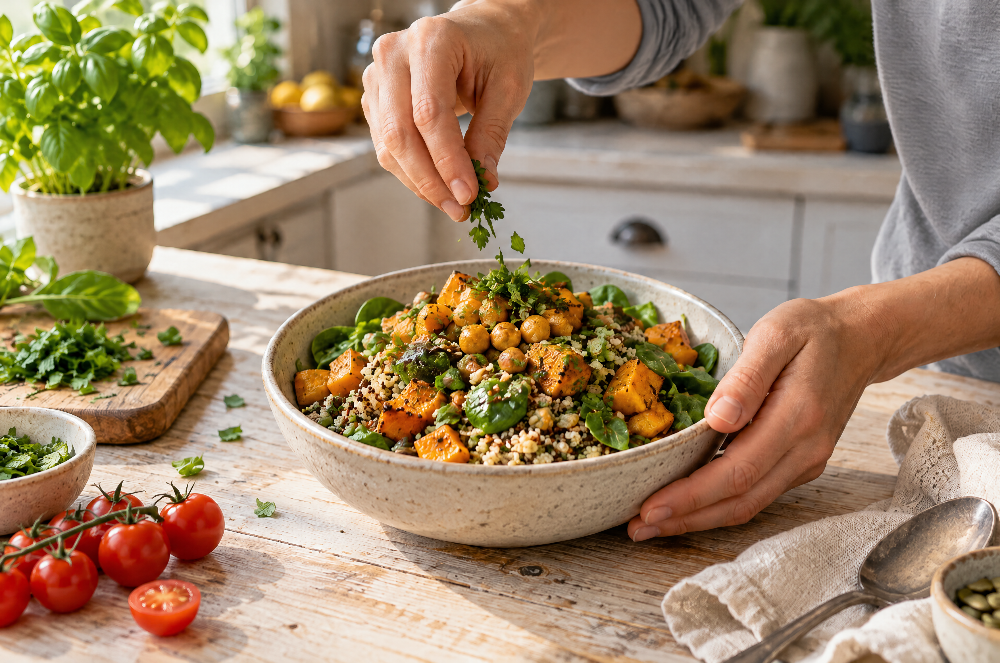

Hello and welcome to my kitchen counter!
I’m so glad you’re here! I firmly believe that good food brings people together, tells stories and, above all, should make you truly happy. On this site, I share my passion for uncomplicated, colorful and—most importantly—delicious vegan cooking.
How it all began
When I first started eating a fully plant-based diet, I often heard the same assumption: “Vegan? Doesn’t that mean missing out on flavor and eating nothing but salad?”
I wanted to prove that wrong. In my own kitchen, I began reimagining traditional favorites, trying out spice combinations and experimenting with fresh ingredients. I soon realized that vegan cooking isn’t about going without. It’s an invitation to discover new flavors, get creative with textures and serve up dishes that even the most skeptical eaters are happy to come back for.
My approach to cooking
Food should be fun, brighten up everyday life and never come with a lecture. I focus on three things in the recipes I share here:
- Practical and everyday-friendly: You don’t need a long list of specialty ingredients or expensive professional equipment. You can find most of what you need at a well-stocked local supermarket.
- Comfort food meets freshness:From golden, oven-baked vegetable lasagna and crispy plant-based chicken-style burgers to warming pumpkin soup, you’ll find hearty comfort food alongside nourishing, colorful bowls packed with fresh ingredients.
- Reliable results:I cook every recipe several times in my kitchen, refine it and write it out step by step, so it’s easy for you to follow.
What you’ll find here
Whether you’ve been eating vegan for years, want to cut back on meat or are simply looking for inspiration for dinner with friends:
- Quick weeknight meals: Colorful wraps, flavorful skillet dishes and fresh bowls that are ready in under 30 minutes.
- Weekend favorites: Hearty bakes, homemade burgers and special menus for celebrations and cozy evenings for two.
- Practical tips: Ideas for plant-based alternatives, smart meal prep for the week and ways to bring out the best in simple ingredients.
Grab a spoon!
Cooking isn’t a science—it’s an experience. Take your time exploring, try something new and make these recipes your own.
Home →